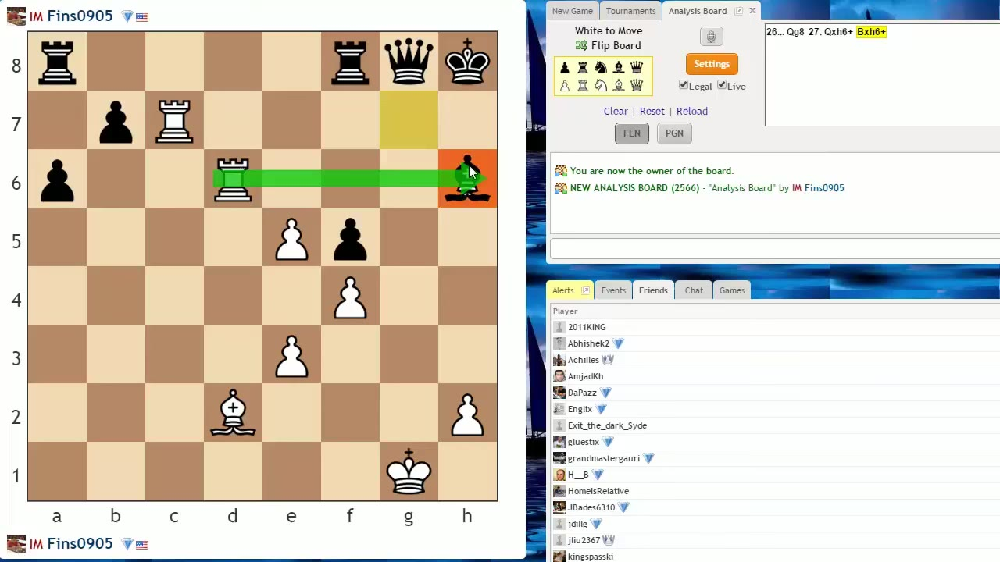
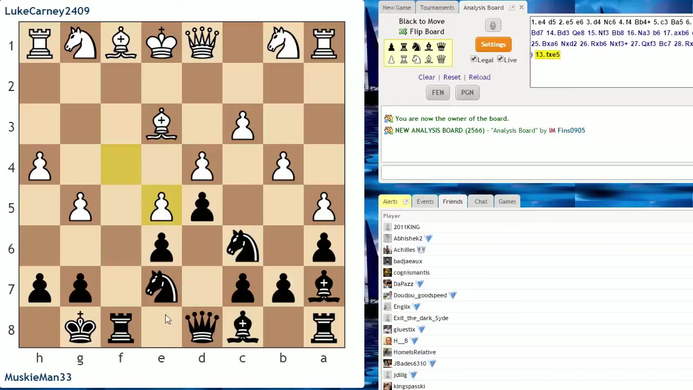
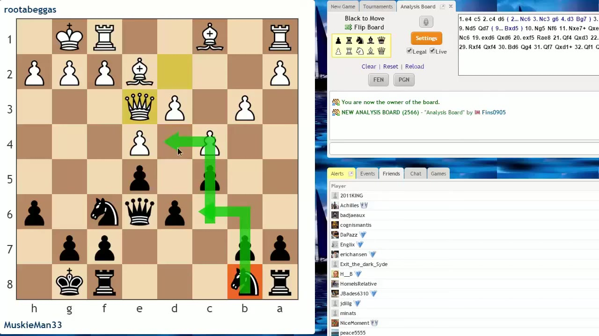
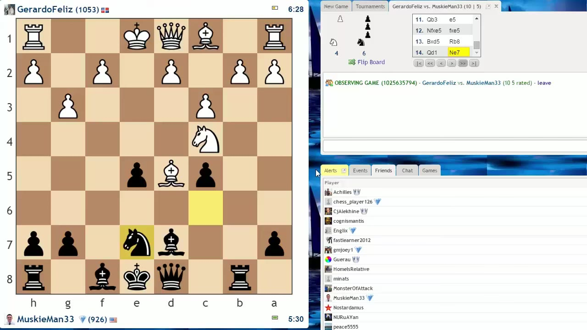
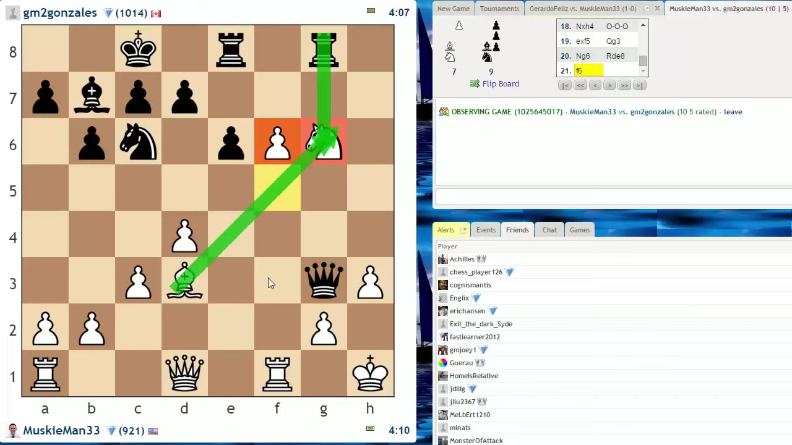
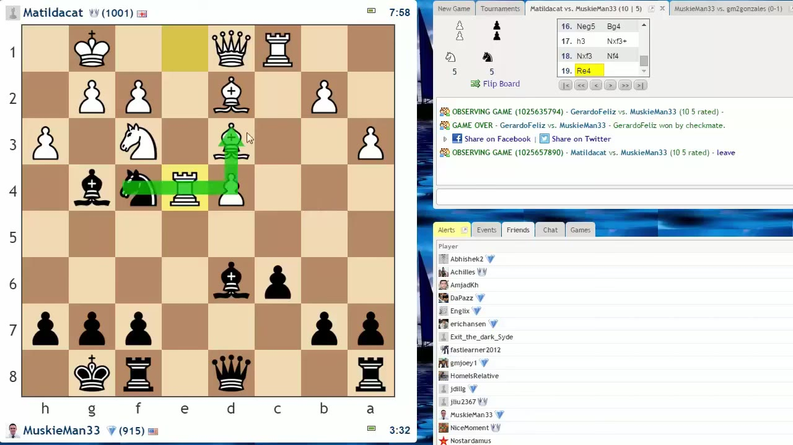

IM John Bartholomew walks his student Zach through annotated games and three live blitz games, isolating the handful of habits that quietly lose games below 1200 — loose pieces, missed pawn breaks, and not thinking about squares.
Watch on YouTubeBartholomew opens with what he calls a trick question, because the mistake in it isn't really a beginner's — it happens at every level up to world champion. White, smelling mate, sacrifices the queen on h6 expecting the rook to mop up. He'd predicted the whole line correctly except for one detail: Black's recapturing bishop hits with check, so Black answers a check with a check and the attack collapses.

The cleaner moves were quiet: Kf2 to sidestep the g-file before reloading the threat, or Rd7 piling a third attacker on the bishop.
Game one: Zach plays a Scandinavian that transposes into a French, and his opponent does the thing you see constantly at this level — pushes nearly every pawn. The early errors are coordination ones: e6 locks in the light-square bishop that wanted f5 first, and Knight c6 blocks the c-pawn that should have gone to c5 to pressure d4.
Zach gets it right with the f6 break, then loses the thread.

Instead of opening it, Zach abruptly played f5, slamming the position shut and erasing his own development lead.
No pawn break, no plan.— John Bartholomew, quoting IM Axel Smith
Game two is a Sicilian where White avoids the open lines and plays c2-c4. Bartholomew uses it to push the bigger idea: stop thinking only about what your pieces attack and start thinking about squares. Both White pawns now bypass d4, so d4 can never again be challenged by a pawn — it's a permanent outpost for a Black knight.

He frames the strategic dream: trade off White's dark-square bishop, keep your own knight, and the d4 outpost becomes a lasting edge.
The second half is three unedited blitz games (10 minutes, 5-second increment) with Bartholomew commenting and Zach unable to hear him. The first is a disaster, and it's instructive precisely because Zach knows all this material and still does it under clock pressure.

The collapse traces back to a loose bishop, the same piece moved repeatedly, and finally a knight retreat that allowed a textbook smothered mate in 15 moves.
I couldn't ever get that dark-square bishop out to castle.— Zach, afterward
Game two is real progress — Zach develops cleanly, controls the center, and even wins a couple of pawns. But his king is exposed, and the bishop on b7 plus the enemy queen are quietly aiming at g2.

When the opponent dropped a piece with a strange-looking move, Zach grabbed it instantly instead of asking what it was for. It was a mating setup.
The third game, a Queen's Gambit Declined, is night and day from the first. Zach develops the kingside first, castles by move seven, and even fixes an earlier habit by getting the pawn to c6 where it belongs. He works up a winning position — going up the exchange after a tactic on the undefended d3 bishop.

Down to under two minutes, he rushed a combination that left him in a losing endgame. The result was the same as the other two, but the play wasn't.
The difference between how he played the first game versus this game is huge. If he keeps working on the undefended pieces, the coordination, the sense of danger — he's going to be over a thousand in blitz soon.— John Bartholomew